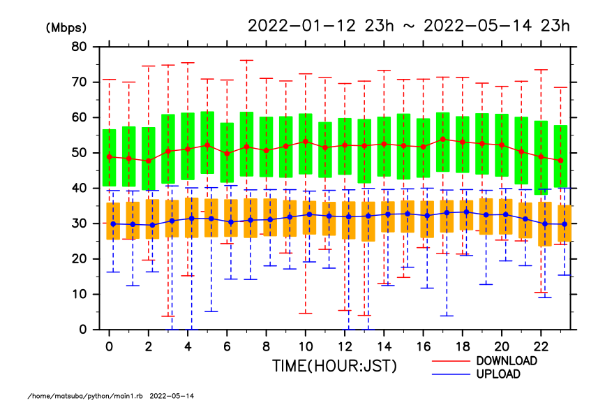
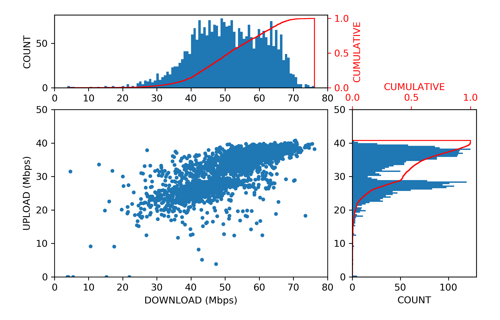

Toggle navigation
松葉のWebページにようこそ
Pythonで自宅のWi-Fi環境を計測してみる
speedtestを使って自宅のWi-Fi環境の速度測定をしてみた。
ほんとはpythonで箱ひげ図を描きたかったけど、やっぱりDCLで描いてしまった。
2022/02/23追記
: 測定結果を散布図に描いてみた。
上り速度が平均30Mbpsでほぼ一定だと思っていた。
だけど、頻度分布を見るとbimodalになっていたのね、へえ。

一つ上に戻る
トップページに戻る